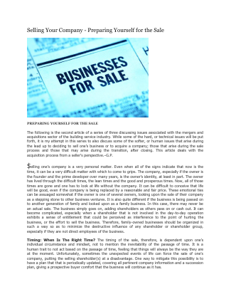
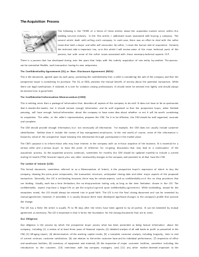
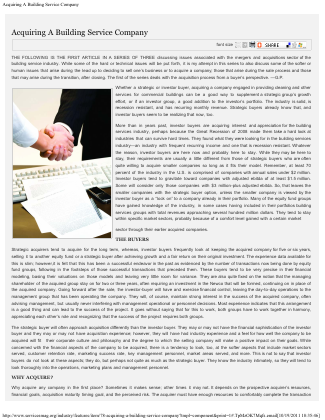

Considering a sale
Understand readiness, market position, buyer fit, value drivers, and the path from first conversation through closing.
Building services M&A and advisory
Gary Penrod & Associates advises contractors, acquirers, and industry leaders through sales, acquisitions, valuation questions, succession planning, and strategic change with practical judgment and complete discretion.
Who we serve
The details of a building service company, contracts, labor, customer concentration, geography, operating model, matter. GPA works with owners and acquirers who want advice informed by that reality.
Understand readiness, market position, buyer fit, value drivers, and the path from first conversation through closing.
Define criteria, assess opportunities, navigate diligence, and evaluate operational realities with an industry-aware advisor.
Strengthen the business, prepare for succession, evaluate strategic options, or solve an operational or financial challenge.
Meet Gary Penrod
Gary founded and operated a building services company for 15 years before selling it to an international service group. He later formed GPA in 1988 and has focused the firm on building services M&A, valuation-related guidance, and strategic advisory work.
He has served the industry as a BSCAI board member and president, written for trade publications, and spoken to industry audiences. That background gives GPA a practical view of both the owner's concerns and the buyer's questions.
Advisory services
GPA’s work is tailored to the situation, whether you are years from an exit, actively evaluating a buyer, or looking for the right company to acquire.
Confidential preparation, buyer identification, process leadership, negotiation support, and coordination through closing.
Learn MoreAcquisition criteria, opportunity evaluation, market perspective, diligence support, and transaction guidance.
Learn MoreMarket positioning and valuation-related guidance to help owners understand value drivers, risk, and decision options.
Learn MoreTiming, readiness, transition expectations, likely buyer profiles, and the operating improvements that can support a stronger future process.
Learn MoreObjective assistance with planning, operational alignment, financial needs, management resources, and restructuring questions.
Learn MoreIndustry-informed perspective on market reach, service mix, leadership depth, resources, and the next stage of the business.
Learn MoreCoordination with legal, accounting, financial, and operational advisors so business issues remain visible through diligence and closing.
Learn MoreGary has written and presented for building services audiences, bringing operator and transaction perspective to industry conversations.
Learn MoreConsulting process
Every engagement is scoped around the client’s facts. A typical first phase clarifies objectives, timing, business context, and whether GPA is the right fit.
Discuss the business, decision, timeline, and the people affected.
Identify readiness, information needs, value drivers, and likely obstacles.
Define the sequence of work and the advisory team needed for the situation.
Manage communication, coordination, diligence, and decision points with discipline.
Keep the plan tied to the owner's goals and the business realities.
Experience by the numbers
The strongest claims on this site are the ones GPA can stand behind: founding date, published archive, operator history, and visible industry participation.
Company timeline
GPA's credibility comes from a narrow focus sustained over decades, beginning with Gary's own time as a building services operator.
He spent 15 years as an owner before selling the company to an international service group.
Gary assisted the acquiring organization with additional acquisitions, adding perspective from the other side of the table.
GPA began as an industry-specific consulting practice and developed a specialty in M&A intermediary and advisory work.
Gary served as a BSCAI board member and president, and has written and presented for building services audiences.
Insights from Gary Penrod
Selected articles remain available as complete PDFs. The cards below point readers to the original publications rather than replacing them with summaries.

Personal readiness, company preparation, valuation, buyer selection, confidentiality, and seller responsibilities.
Read Article
How buyers and sellers move from preparation through diligence, negotiation, closing, and transition.
Read Article
A buyer's perspective on objectives, fit, operating risk, financing, diligence, and post-close transition.
Read ArticleClient comments
Every engagement is different. The standards are not: confidentiality, thoughtful preparation, candid guidance, and respect for the people affected by a transaction.
Current opportunities
Opportunity details are shared only when appropriate and after direct inquiry. Public summaries intentionally remain limited.
GPA is currently confirming which opportunities may be presented publicly. Contact us for a confidential discussion of active assignments and acquisition criteria.
Inquire privatelyStart with a private conversation
Whether you are exploring a sale, acquisition, valuation, or next-stage plan, an initial conversation can help clarify the right questions.